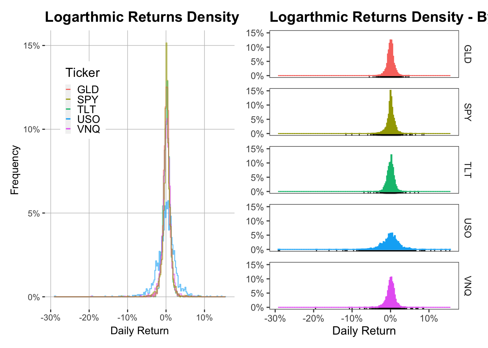

Asset Classes
Returns by Asset Class
Summary of Analysis
Following is a summary of the analysis on select asset class returns on the NYSE and NASDAQ, the two largest stock exchanges globally. Representing returns for each asset class is a specific Exchange Traded Fund (ETF) that allows investors to gain exposure to various asset prices without physically possessing underlying asset.
- Analysed asset classes: Gold via the SPDR Gold Trust (Ticker: GLD), US equities via the SPDR S&P 500 ETF Trust (Ticker: SPY), Energy Liquids via the United States Oil ETF (Ticker: USO), US Long Term bonds via the iShares 20+ Year Treasury Bond ETF (Ticker: TLT), and Real Estate via the Vanguard Real Estate Index Fund (Ticker: VNQ).
Analysis Window: 2014/01/01 - 2023/01/31
All included asset classes had negatively skewed logarithmic returns.
Extreme negative returns were more frequently observed than extreme positive returns across all asset classes.
Real Estate had the largest negative skew.
US equities generated the highest mean daily return, and Energy Liquids generated the lowest, with daily average returns of 0.0416% and -0.0609%, respectively.
Gold returns had the lowest volatility of the compared asset classes, and Energy Liquids had the highest.
US equities and Real Estate prices had the strongest positive correlation, with a correlation coefficient of 0.44.
- US Equities and Real Estate prices tended to move in the same direction, whether that be positive or negative.
Energy Liquid and Gold prices were positively correlated at an abnormally high level in 2022.
- Possibly related to high inflation in 2022 that was in part driven by high energy prices.
Asset returns were not normally distributed.
- Returns were not symmetric about the mean, and differed from a bell curve distribution.
Together, these histograms provide a visual representation of the distribution of returns for the asset classes within the analysis. This distribution provides insights as to how frequent and extreme outlier (or anomalous) returns are within each asset class.
Energy Liquids had comparatively large outlier returns, suggesting that a risk-averse individual would prefer to invest in other asset classes with less extreme outliers, such as US Long Term bonds or Gold. Investing in asset classes that are historically less prone to large movements, both individually or with the market as a whole, reduces the risk of extreme portfolio losses.
| Ticker | Mean | Std.Dev | Skewness | Kurtosis |
|---|---|---|---|---|
| GLD | 0.018186% | 0.892986% | -0.1063539 | 6.041964 |
| SPY | 0.041575% | 1.134011% | -0.8134746 | 16.898902 |
| TLT | 0.010795% | 0.924014% | -0.0014229 | 8.772180 |
| USO | -0.060927% | 2.561366% | -1.5977531 | 21.700870 |
| VNQ | 0.029684% | 1.309078% | -1.8093719 | 32.620988 |
Complementing the above visualizations, these table provide numeric representations as to the frequency (kurtosis) and general direction (skewness) of outlier returns within each asset class. A large kurtosis value indicates that the asset class had more extreme returns, and the skewness value indicates the general direction of these extreme returns (positive or negative). Real Estate had the largest kurtosis and negative skew of the compared assets, and with Energy Liquids generating the second largest statistic in both.
Also included in the table is the mean daily return across the analysis, as well as the standard deviation of returns. These both provide a long term view on asset performance, with mean highlighting average returns, and standard deviation highlighting the relative volatility of each asset class. Gold returns had the lowest volatility within the analysis, and Energy Liquids had the largest. These observed statistics are in keeping with the past underlying price trends of either asset, with energy revenues traditionally being more cyclical and subject to prevailing oil prices, and gold representing an asset that reduces investors exposure to market cycles.
This correlation matrix provides correlation coefficients for the asset classes within the analysis, indicating the strength and direction of the linear relationship between each asset class. A correlation of +1 describes a perfect positive relationship, where the increase in one asset price has exact proportional increase in the other asset price.
These correlations can be used to inform investment decisions such as an investor wanting to diversify a large position or speculate on the decline of specific asset class. The -0.18 correlation between US securities and Long Term US bonds highlighted the ability for fixed income securities to offset price movements in the equity market, explaining why some fund manager maintain a specific percent exposure to either asset class. Another notable takeaway is the relatively high correlation of 0.44 between Real Estate and US equities, given that many retail investors largest exposure is Real Estate via home ownership, but yet they continue to primarily invest in equities. This behavior means that some retail investors would see larger diversification benefits if they invested in other asset classes.
As highlighted by the correlation coefficient of 0.05 in the matrix and overall unpredictability across the analysis window, Energy Liquids and Gold prices typically don’t have a strong consistent correlation, positive or negative. Interestingly, this trend seems to have changed in 2022, with Energy Liquids and Gold appearing to show a strong positive correlation over the rolling windows. A possible explanation for this recent change is the high inflation observed in 2022 that was partially driven by high energy prices. These high energy prices increased the revenues for many energy producers, while simultaneously, investors ‘fled’ to gold as an asset reduce exposure to inflation.
| Ticker | Statistic | P.Value | Method |
|---|---|---|---|
| GLD | 884.9348 | 0 | Jarque Bera Test |
| SPY | 18636.1502 | 0 | Jarque Bera Test |
| TLT | 3170.7696 | 0 | Jarque Bera Test |
| USO | 34253.6999 | 0 | Jarque Bera Test |
| VNQ | 84745.7471 | 0 | Jarque Bera Test |
The Jarque Bera Test measures whether sample data has skewness and kurtosis matching that of a normal distribution. Unsurprisingly, given the negative skewness and large kurtosis, none of the analysed asset returns matched a normal distribution in the test. This has implications for the discussed increased probability of extreme price changes, as well as the reduced practical effectiveness of certain asset pricing models that assume logarithmic asset returns are normally distributed.
| Ticker | Statistic | P.Value | Method | Alternative |
|---|---|---|---|---|
| SPY | 0.4820143 | 0 | Asymptotic one-sample Kolmogorov-Smirnov Test | two-sided |
Complementing the Jarque Bera Test, the Kolmogorov-Smirnov Test measures the probability of whether or not a sample (in this case, US equities) has normally distributed returns. The test failed to find a significant statistic, meaning that equity returns were not normally distributed in the analysis window. Again, this has implications for pricing models that assume logarithmic equity returns are normally distributed.